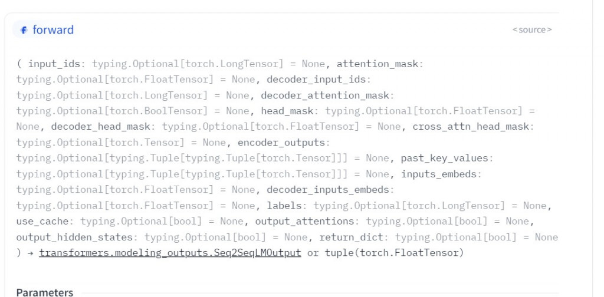
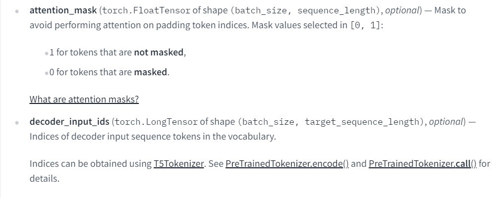
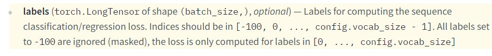

【day20】找到文章的重點-T5( Text-To-Text Transfer Transformer)(下)
發布日期: 2022-09-24 18:44:06
原文連結: https://ithelp.ithome.com.tw/articles/10297415
為何要找到文章的重點
現在社會的步調越來越快，資訊增長的速度卻越來越迅速，但我們所能利用的時間越來越稀少，那我們該如何從這些文章中，找到我們想看的呢?答案就是文本摘要的技術。
文本摘要與現在youtube的短影片概念相同，利用30秒的短影片試閱，若有興趣就可以點擊留言中的完整版網址，來找到想要觀看的影片。相同的方法也能套用在文本摘要中，我們可以利用這篇文章的重點來當作試閱文章，若讀者有興趣就能夠再去觀看完整版本。
T5文本摘要
在hugging face上面，也能下載到T5這一個預訓練模型，也因為被統整過的模型，所以訓練起來也與BERT相似。
今天的目錄如下:
- 1.導入T5與函式庫
- 2.創建資料集與訓練模型
- 3.資料評估
導入T5與函式庫
我們今天要使用的是點我下載資料集是Kondalarao Vonteru的數據集的擴展包，包含了大約9.8萬條新聞與專業作家的文本摘要，這個數據集還對這些新聞做了以下資料前處理。
1.刪除 URL、htmls 標籤、表情符號
2.將簡寫復原
2.將俚語復原
3.刪除標點符號（除了 . ）非字符、換行符號、主題標籤
4.刪除標註其他的@與後面的ID
5.刪除停用詞(stop words)
所以我們在使用資料集時不需要再做資料前處理了
首先我們先安裝T5的必要涵式庫SentencePiece與評估的函式庫
pip install SentencePiece
pip install rouge
之後導入函式庫
from transformers import T5Tokenizer, T5ForConditionalGeneration
from torch.utils.data import Dataset,DataLoader
from tqdm.auto import tqdm
import torch.utils.data as data
import pandas as pd
import torch
import transformers
然後與前天一樣直接用transformers的方式下載預訓練模型
tokenizer = T5Tokenizer.from_pretrained("t5-small")
model = T5ForConditionalGeneration.from_pretrained("t5-small")
接下來開始來看看T5該如何創建我們的訓練資料吧。
創建資料集與訓練模型
昨天說到要對T5使用任務時，必須要加入一個任務名稱當作輸入，而我們今天的任務名稱是文本摘要，所以在讀取CSV之後我們還需要對輸入加入"summarize: "
data = pd.read_csv('cl_news_summary.csv')
input_text = data['text'].tolist()
input_text = ["summarize: " + i for i in input_text]
summary = data['summary'].tolist()
我們為了知道T5需要哪一些輸入，所以還是要到官方網站上查看詳細的說明點我前往。

在這邊我統整了三個需要的輸入資料，input_ids是代表文字的本身，attention_mask是對應填充的陣列，我相信前天寫過BERT之後對這兩個參數並不陌生。

昨天說明T5時提到了T5統一了所有NLP任務的架框(text to text)，所以這裡的labels代表的，就是由專業人士撰寫文本摘要，這裡需要注意的一點是labels並沒有attention_mask的屬性，但我們一定會填充這些文字的訊息，所以在這裡官方給了我們一個辦法，就是將填充的文字轉通通轉換為-100，這樣就會被程式忽略掉。

這樣就可以來建立我們的訓練資料集了。
class NewsSummary(Dataset):
def __init__(self, text, summary, tokenizer,max_len = 512):
self.data = []
input_t = tokenizer(text,padding="longest")
label_t = tokenizer(summary,padding="longest")
for i,j,k in zip(input_t['input_ids'], input_t['attention_mask'], label_t['input_ids']):
#轉換-100
for cnt,tmp in enumerate(k):
if tmp == 0:
k[cnt] = -100
self.data.append({'input_ids':torch.tensor(i[:max_len]),
'attention_mask':torch.tensor(j[:max_len]),
'labels':torch.tensor(k[:max_len])})
def __getitem__(self, index):
return self.data[index]
def __len__(self):
return len(self.data)
data = pd.read_csv('cl_news_summary.csv')
input_text = data['text'].tolist()[:5000]
input_text = ["summarize: " + i for i in input_text]
summary = data['summary'].tolist()[:5000]
tokenizer = T5Tokenizer.from_pretrained("t5-small")
model = T5ForConditionalGeneration.from_pretrained("t5-small")
train_set = NewsSummary(input_text, summary, tokenizer,max_len = 512)
train_loader = DataLoader(train_set,batch_size = 1,shuffle = True)
接下來是訓練的部分，因為我們是做文本生成的任務，這類任務通常都會有自己的評估方式，所以我們在訓練時，只需將訓練數據放到pytorch當中訓練即可，不需要查看測試數據集的Loss值，這裡的方式也與BERT相同這裡就不多說了。
model.cuda()
optimizer = torch.optim.AdamW(params = model.parameters(), lr = 1e-4)
for epoch in range(20):
model.train()
train = tqdm(train_loader)
for data in train:
for key in data.keys():
data[key] = data[key].cuda()
outputs = model(**data)
loss = outputs.loss
train.set_description(f'Epoch {epoch}')
train.set_postfix({'Loss': loss.item()})
optimizer.zero_grad()
loss.backward()
optimizer.step()
model.save_pretrained('model_{}'.format(epoch))
資料評估
Rouge(Recall-Oriented Understudy for Gisting Evaluation)，是評估文本摘要與文本翻譯的一種方式。它通過機器生成的文字與實際文字進行比較計算，得出相應的分值，來衡量兩者之間的相似度。
在python中可以簡易的使用一行程式來完成Rouge的評估方法
rouge = Rouge()
rouge.get_scores("句子A","句子B")
接下來我們將剛剛訓練好的T5 model來測試看看，在python官方網站上出現的字會出現什麼樣子的文本摘要
text = 'The warning Weights from XXX not initialized from pretrained model means that the weights of XXX do not come pretrained with the rest of the model. It is up to you to train those weights with a downstream fine-tuning task.'
我們要通過model.generate的方式來產生文字
input_ids = tokenizer.encode(text, return_tensors = 'pt')
generated_ids = model.generate(input_ids, num_beams = 2, max_length = 400, repetition_penalty = 2.5, length_penalty = 1.0, early_stopping = True)
preds = [tokenizer.decode(i, skip_special_tokens = True, clean_up_tokenization_spaces = True) for i in generated_ids]
最後我們輸入與程式產生的摘要顯示出來，我們可以看到程式可以產生出一個語意通順且能表達重點的摘要了。
print(text)
print()
print(preds[0][2:])
--------------------------------------------顯示--------------------------------------------
The warning Weights from XXX not initialized from pretrained model means that the weights of XXX do not come pretrained with the rest of the model. It is up to you to train those weights with a downstream fine-tuning task.
This is a bug that has been fixed in the latest version of Python.
接下來我們來看看Rouge評估出來的結果
from rouge import Rouge
rouge = Rouge()
rouge.get_scores(text,preds[0][2:])
--------------------------------------------顯示--------------------------------------------
'rouge-1': {'r': 0.35714285714285715, 'p': 0.1724137931034483, 'f': 0.23255813514332083},
'rouge-2': {'r': 0.0, 'p': 0.0, 'f': 0.0},
'rouge-l': {'r': 0.35714285714285715, 'p': 0.1724137931034483, 'f': 0.23255813514332083}}
可以看到rouge-1與rouge-l都能達到35%的召回率(recall)，這樣其實就是一個不錯的成績了，rouge-2都為0是因為我生成文本的方式不可能達成rouge-2的公式，所以才會都是0。
完整程式碼
from transformers import T5Tokenizer, T5ForConditionalGeneration
from torch.utils.data import Dataset,DataLoader
from tqdm.auto import tqdm
import torch.utils.data as data
import pandas as pd
import torch
import transformers
class NewsSummary(Dataset):
def __init__(self, text, summary, tokenizer,max_len = 512):
self.data = []
input_t = tokenizer(text,padding="longest")
label_t = tokenizer(summary,padding="longest")
for i,j,k in zip(input_t['input_ids'], input_t['attention_mask'], label_t['input_ids']):
for cnt,tmp in enumerate(k):
if tmp == 0:
k[cnt] = -100
self.data.append({'input_ids':torch.tensor(i[:max_len]),
'attention_mask':torch.tensor(j[:max_len]),
'labels':torch.tensor(k[:max_len])})
def __getitem__(self, index):
return self.data[index]
def __len__(self):
return len(self.data)
data = pd.read_csv('cl_news_summary.csv')
input_text = data['text'].tolist()[:200]
input_text = ["summarize: " + i for i in input_text]
summary = data['summary'].tolist()[:200]
tokenizer = T5Tokenizer.from_pretrained("t5-small")
model = T5ForConditionalGeneration.from_pretrained("t5-small")
train_set = NewsSummary(input_text, summary, tokenizer,max_len = 512)
train_loader = DataLoader(train_set,batch_size = 1,shuffle = True)
model.cuda()
optimizer = torch.optim.AdamW(params = model.parameters(), lr = 1e-4)
for epoch in range(20):
model.train()
train = tqdm(train_loader)
for data in train:
for key in data.keys():
data[key] = data[key].cuda()
outputs = model(**data)
loss = outputs.loss
train.set_description(f'Epoch {epoch}')
train.set_postfix({'Loss': loss.item()})
optimizer.zero_grad()
loss.backward()
optimizer.step()
model.save_pretrained('model_{}'.format(epoch))
我們終於經過了2/3的課程了，如果到現在都有跟上，應該已經學會了架設基礎神經網路模型、靜態與動態爬蟲技巧、預訓練模型的使用、圖像與文字的判別與生成方式、AI之中的分支、機器學習的實作...等，我們不只學習了如何撰寫程式，還學會了這些模型的概念。但有沒有發現，我們每一個專案都是採用一種技術，所以接下來，我們要開始將深度學習、與機器學習這兩種方式開始混和在一起使用，並加強一些關於資料前處理的技巧，來完成更多更加有趣的功能。
課程中的程式碼都能從我的github專案中看到
https://github.com/AUSTIN2526/learn-AI-in-30-days